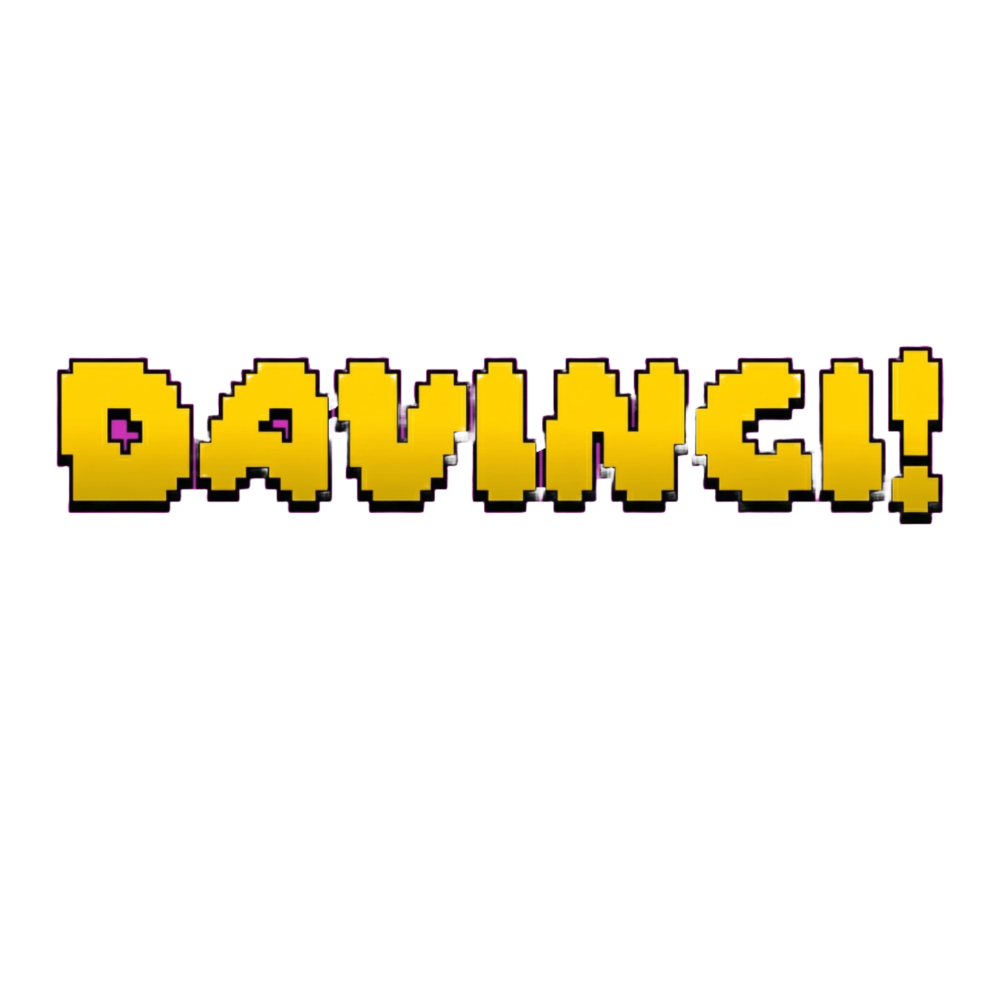

MP
Accueil
Projets
Contact
Amos, Abitibi.
48° Nord.
Scotché à l'ordinateur,
les pieds dans la boue.
2016.
Premier marathon avec ma mère.
OUI,
ma mère est trop forte.
2016 — 2017.
Tour de l'Abitibi. Deux fois.
Formation
UQAT
Assistant technique au SPUFAD.

Projet de maîtrise en création numérique ;
Projet DaVinci
FCIAT
Jury Bell Média.
FCIAT
Responsable technique.
Rayonnement
Présentation au RIMA et à la Nuit Blanche.
Aujourd'hui, Savoie.
Alpes Françaises.
La Rosière
Créateur de contenu.
La suite ?
Écrivons-la ensemble